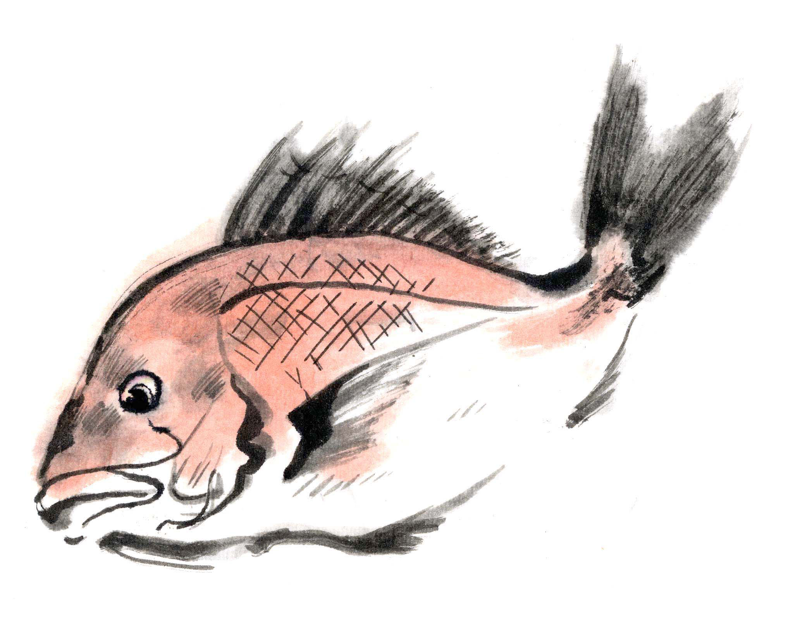

日々の僅かなサインから「気・血・水」の状態を客観的に把握する習慣が身につきます。
体質や状態に合わせた最適な処方を。一人ひとりに寄り添う漢方の知恵を提案できます。
生活習慣から見直し、病気になる前の「未病」を改善。一生続く健康維持の強力な武器となります。
不眠、冷え、更年期の悩みなど。現代人が抱えやすい症例に基づき、改善へ導くフローを身につけます。
自覚症状や経過を重要視し、変化に合わせて漢方薬を選べる専門性を養成します。
誤治を避ける正しい知識と、副作用に対する注意深さを学びの根幹に据えています。

家族の些細な不調に寄り添う。暮らしの中で正しい保存法や服用法を実践する頼れる存在に。

現在のスキルに漢方の視点を掛け合わせる。肌の悩みやストレスへの総合的なアドバイスを提供。
忙しいあなたでも大丈夫。認定までの4つのステップ
思い立ったら、その場でスタート。スマホから1分で完了です。最短当日発送するため、やる気があるうちに教材が届きます。 ※「後払い」を選べば、今すぐ始められます。
通勤中や家事の合間など、場所も時間も選びません。図解中心のテキストで初心者もスラスラ読めます。LINEでプロの講師に質問し放題なので挫折しません。
試験はご自宅で、好きなタイミングで受験可能。365日・無制限のLINE質問サポートがあるから、疑問をその場で解決して着実に知識が身につきます。
最短3週間で有資格者へ。日本技能開発協会（JSDA）の公式認定証を発行します。履歴書への記載や開業時の信頼の証として幅広く活用いただけます。

ラーキャリの漢方アドバイザー資格は、
一般社団法人 日本技能開発協会（JSDA）の
公式認定を受けています。